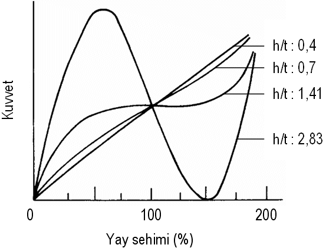

|
M. Murat Topaç, N. Sefa Kuralay
Müh. Fak., Makine Müh. Böl., Otomotiv A.B.D.
Yetkin Hamuriþçi
Müh. Fak. F.B.E.,
Makine Müh. A.B.D., Konstrüksiyon-Ýmalat Programý
Dokuz Eylül Üniversitesi
Bornova, Ýzmir
Not: Bu makale ilk olarak TMMOB Mühendis ve Makina Dergisi Mart 2009 sayýsýnda yayýnlanmýþtýr ve aþaðýdaki linkten PDF formatýnda indirilebilir;
www.mmo.org.tr/resimler/ekler/b64a3e05dbe8b78_ek.pdf?dergi=481 (3,17MB)
Özet
Tasarým aþamasýndaki bir kamyon kavramasýnda kullanýlmasý düþünülen kavrama kapaðýnýn yapýsal analizi gerçekleþtirilmiþtir. Bu amaçla, kavramanýn ayrýlmasý sýrasýnda diyafram yayda oluþan elastik þekil deðiþimi sonlu elemanlar yöntemi yardýmýyla simüle edilerek kapaða etkiyen kuvvetler belirlenmiþtir. Sonuçlar, yaya uygulanan yükleme testlerinden elde edilen kuvvet deðerleriyle karþýlaþtýrýlmýþtýr. Kavrama kapaðý sonlu elemanlar yöntemi kullanýlarak modellenmiþ, yay kuvvetinin parça genelinde oluþturduðu gerilmeler ve elastik þekil deðiþimleri incelenmiþtir. Üretici tarafýndan öngörülen maksimum elastik þekil deðiþimi kriteri göz önünde bulundurularak, kavrama kapaðýnýn fonksiyona uygunluðu deðerlendirilmiþtir.
Anahtar Sözcükler: Taþýt kavramasý, Diyafram yay, Kavrama kapaðý, Sonlu elemanlar yöntemi
Determination of elastic deformation of an automotive clutch cover under pedal force by using finite element method
Abstract
A structural analysis of a clutch cover that will be used in a truck clutch is performed. For this reason, the elastic deformation of the diaphragm spring occuring during disengagement of the clutch was simulated and forces acting on the clutch cover were determined by finite element method. The results of the analysis were compared with the force characteristics obtained from loading tests applied to the spring. In addition to this, the clutch cover was modelled via finite element method. Stress and elastic deformation distribution of cover caused by spring forces were studied. In the light of maximum elastic deformation criteria predicted by the manufacturer, functional suitability of the cover was evaluated.
Keywords: Automotive clutch, Diaphragm spring, Clutch cover, Finite element method
1. Giriþ
Taþýt kavramasý ya da bilinen adýyla debriyaj, güç iletim sisteminde motor ile vites kutusu arasýnda yer alan çözülebilir baðlantý elemanýdýr. Taþýtýn kalkýþý sýrasýnda, belirli bir devir sayýsýnda çalýþan motordan alýnan momentin, mümkün olan en düþük sarsýntýyla vites kutusu ile diðer iletim organlarýna aktarýlmasý ve basamak deðiþimi sýrasýnda senkromeç diþlerinin yük altýnda zorlanmamasý için kademeli vites kutusuna aktarýlan momentin kesilmesi iþlemleri, kavramalar yardýmýyla saðlanmaktadýr [1, 2]. Bu iki temel göreve ek olarak kavrama, motor ile vites kutusu arasýnda bir emniyet elemaný olarak iþlev görmekte, aþýrý moment aktarýmýnda kaydýrma yaparak vites kutusunun zarar görmesini engellemektedir. Þekil 1'de, yol taþýtlarýnda sýklýkla uygulanan tek diskli kuru kavramanýn yapý elemanlarý görülmektedir [3].
Þekil 1. Diyafram yaylý taþýt kavramasý [3]
Diskli kuru kavramalarda temel olarak balatalý bir disk, baský plakasýyla birlikte ve yay kuvveti etkisi ile volana bastýrýlarak, motordan alýnan momentin vites kutusuna aktarýmý saðlanmaktadýr. Motor ile vites kutusu arasýndaki baðlantýnýn çözülmesi için sürücü mahallinde bulunan kavrama kumanda pedalýna basýlmak suretiyle yay kuvveti yenilmekte ve baský plakasý serbest býrakýlmaktadýr (Þekil 2). Böylelikle balatalý diskin volan ile temasý kesilmektedir. Sistemde baský yayý görevini üstlenen diyafram yay iki taraflý bir manivela kolunu meydana getirmektedir. Manivela hareketinin gerçekleþtirilmesi için yay, mesnet görevi gören kavrama kapaðýna perçinlerle ve öngerilmeli olarak baðlanmaktadýr. Güç iletimi sýrasýnda, yayýn dýþ kenarý (etek) baský plakasýna basmaktadýr. Kavramanýn ayrýlmasý için baský rulmaný pedal kuvveti etkisiyle, diyafram yayýn iç kýsmýndaki dilleri eksenel yönde ittirir. Böylece yay, perçinler üzerinde elastik olarak þekil deðiþtirerek baský plakasý ile kavrama diskini ayrýlýr ve kuvvet iletimi kesilmiþ olur.
Þekil 2. Basýlarak çözülen diyafram yaylý kavrama [4]
Kavramanýn temel elemanlarýný barýndýran kavrama kapaðýnýn, çalýþma sýrasýnda mümkün olduðunca az esneme göstermesi, tasarýmda arzu edilen kriterlerden bir tanesidir. Kapaktaki elastik þekil deðiþimi ne kadar az olursa, kavramanýn ayrýlmasý için gereken pedal kuvvetindeki kayýp o kadar az olmaktadýr.
Bu çalýþmada, bir kamyonun güç iletim sisteminde uygulanmasý düþünülen diskli kuru kavramanýn tasarým aþamasýndaki kapaðýnda, iþletim sýrasýnda oluþacak elastik þekil deðiþimi ANSYS® Workbench V11.0 sonlu elemanlar paketi kullanýlarak incelenmiþtir. Bunun için önce konstrüksiyonda kullanýlacak mevcut diyafram yay sonlu elemanlar yöntemiyle modellenerek, iþletme kuvveti nedeniyle ortaya çýkacak þekil deðiþimi simüle edilmiþtir. Bu þekilde, iþletim sýrasýnda parçaya etkiyen eksenel kuvvetin yay sehimine baðlý deðiþimi elde edilmiþtir. Oluþturulan yay karakteristiði, üretici firma bünyesinde kullanýlan test cihazlarý yardýmýyla deneysel olarak da doðrulanmýþtýr. Böylelikle, sonlu elemanlar analizinden elde edilen sonuçlarýn gerçeðe yakýnlýðý ve kullanýlabilirliði hakkýnda fikir edinilmiþtir. Ýkinci aþamada, kapaðýn katý modeli ve sonlu elemanlar modeli oluþturularak, yay analizinden elde edilen kuvvet deðerleri ýþýðýnda parçanýn gerilme ve elastik þekil deðiþimi analizleri yapýlmýþtýr. Bulunan sonuçlar, üretici tarafýndan belirlenen kriterlerle karþýlaþtýrýlmýþ, parçanýn konstrüksiyona uygunluðu deðerlendirilmiþtir.
Diyafram yay karakteristiðinin saptanmasý
2.1. Yay karaktesitiðinin deneysel olarak elde edilmesi
Ýþletim sýrasýnda kapakta ortaya çýkacak elastik þekil deðiþimi miktarýnýn belirlenebilmesi için, parçaya etkiyen kuvvetlerin bilinmesi gerekmektedir. Kavrama konstrüksiyonunda diyafram yaylar kavrama kapaðýna, perçinler ve mesnet halkasý ile Þekil 3'te görülen biçimde baðlanmaktadýrlar. Çalýþmanýn ilk aþamasýnda, kavramanýn ayrýlmasý sýrasýnda yayda meydana gelen elastik þekil deðiþimi nedeniyle, baðlantý perçinlerinden kapaða iletilen kuvvetler belirlenmiþtir.
Þekil 3. Diyafram yayýn kapaða baðlanmasý
Taþýt kavramalarýnda kullanýlan diyafram yay yapý itibariyle, Belleville yayý ya da disk yay olarak bilinen makine elemanýnýn özel bir halidir. Þekil 4'te görüldüðü gibi, diyafram yayda disk yaydan farklý olarak, esnekliðin artýrýlmasý için radyal yarýklar bulunmaktadýr. Disk yayda, yay ekseni Z boyunca belirli bir z sehimi oluþturabilmek için uygulanmasý gereken kuvvet F,
(1)
baðýntýsýyla hesaplanýr [5; 6].
Þekil 4. Diyafram yay
Þekil 5. Disk yayýn geometrisi
Burada E; yay malzemesinin elastisite modülü, v; Poisson oraný, t; kesit kalýnlýðý, h; yay yüksekliði, d0 ve d1 sýrasýyla; disk yayýn dýþ ve iç çapýdýr. M, d0/ d1 oranýna baðlý sabit bir deðer olup, literatürde verilen ilgili diyagramlardan elde edilebilmektedir [6; 7]. (1) Baðýntýsýndan elde edilen yay karakteristiðinin çeþitli yükseklik/kalýnlýk (h/t) oranlarýna baðlý deðiþimi Þekil 6'da görülmektedir. Buna göre disk yayýn rijitliði yay sehiminin fonksiyonu olup, parça üzerine etkiyen kuvvetin büyüklüðüne baðlý olarak deðiþmektedir [8; 9]. Taþýt kavramalarýnda kullanýlan diyafram yaylar da yapýlarý gereði, disk yay karakteristiðine çok yakýn bir özellik gösterir. Üretim sýrasýnda yay, kavramaya % 100 sehimle yani düzleþtirilmiþ þekilde, öngerilmeli olarak monte edilmektedir. Bu uygulamayla, yayýn h ve t ölçülerine baðlý olarak kuvvet karakteristiðinde yataya yakýn degresif bir bölge elde edilebilmektedir. Böylece, yaklaþýk sabit bir kuvvet ihtiyacý ile kavramanýn çalýþmasýna olanak saðlanmaktadýr [1; 2].

Þekil 6. Disk yay karakteristiði [6]
Kavramanýn komple montaj modelinin üzerinden analiz yapýlmasý, uzun süreli modelleme çalýþmasý ve oldukça fazla sayýda elemandan oluþan çözülmesi zor bir sonlu elemanlar analizi gerektirmektedir. Bu nedenle kavramanýn tamamý yerine, sistemin oluþturan temel yapý elemanlarýnýn ayrý ayrý deðerlendirilmesi yoluna gidilmiþtir. Ýlk aþamada, sistemin kuvvet karakteristiðini belirleyen diyafram yayýn elastik þekil deðiþimi nedeniyle, kavrama kapaðýna etkiyen yük incelenmiþtir. Sonlu elemanlar analizinden saðlanan yay kuvveti karakteristiði, üretici firma bünyesinde bulunan diyafram yay test cihazlarý ile elde edilmiþ deneysel karakteristikle karþýlaþtýrýldýktan sonra, kapaðýn yapýsal analizinde kuvvet girdisi olarak kullanýlmýþtýr.
|